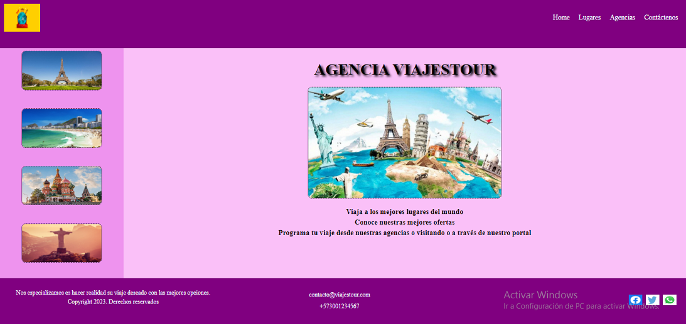

Página principal Agencia de viajes
Se establece la página principal de un portal de una agencia de viajes con enlaces de encabezado, imágenes de sitios e información relevante en pie de página. También se aplica responsive design para tres tamaños de dispositivos.
Leer más

Página principal aplicación Batatabit
En este proyecto se crea con html y css el aspecto visual de la aplicación Batatabit. El diseño base se creó a partir del tamaño Mobile y se crearon Media Querys para tablet a 930px y para laptop a 1320px.
Leer más

Página principal Best Food
Este proyecto muestra una página de comidas construido con HTML y CSS usando principalmente la herramienta Grid y Responsive Design que permite reubicar elementos de la página para pantallas menores y mayores a 768px.
Leer más